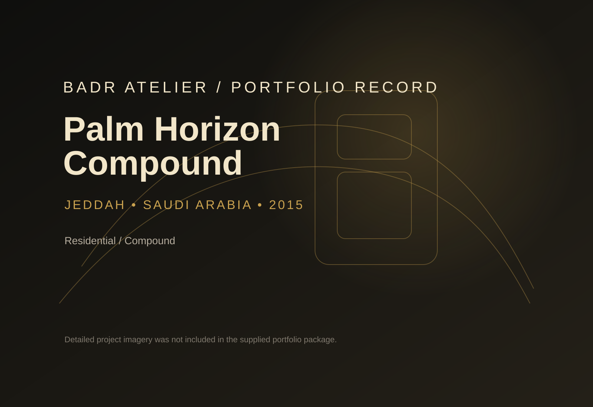
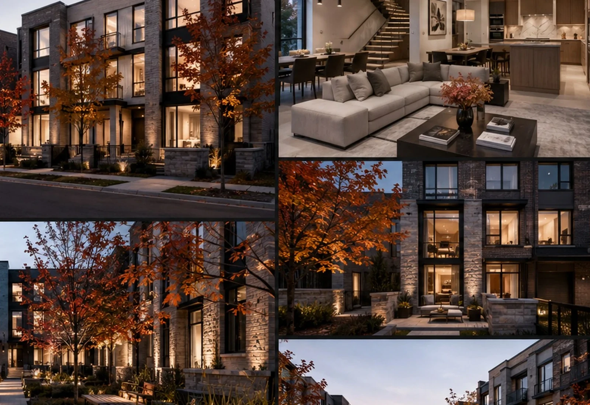
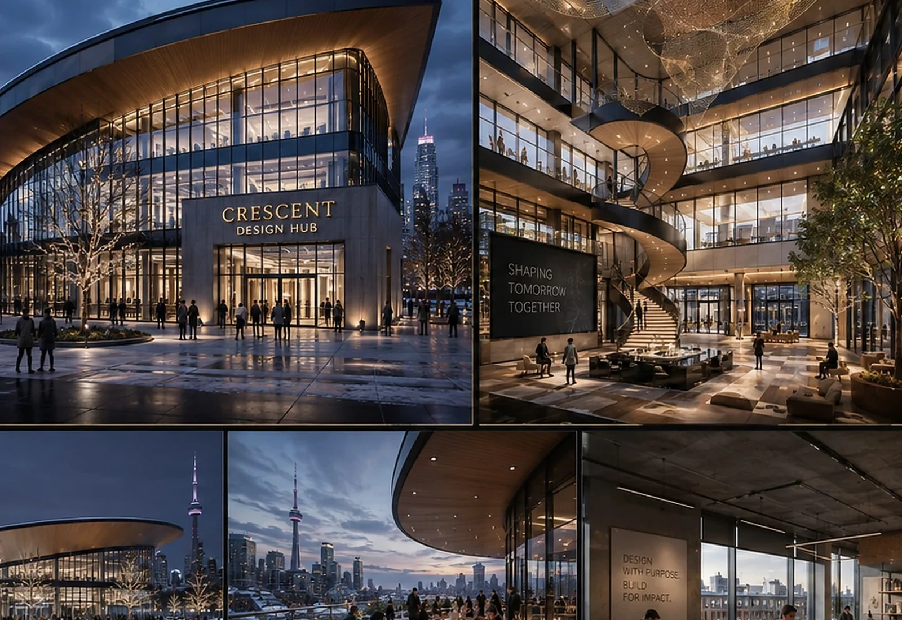
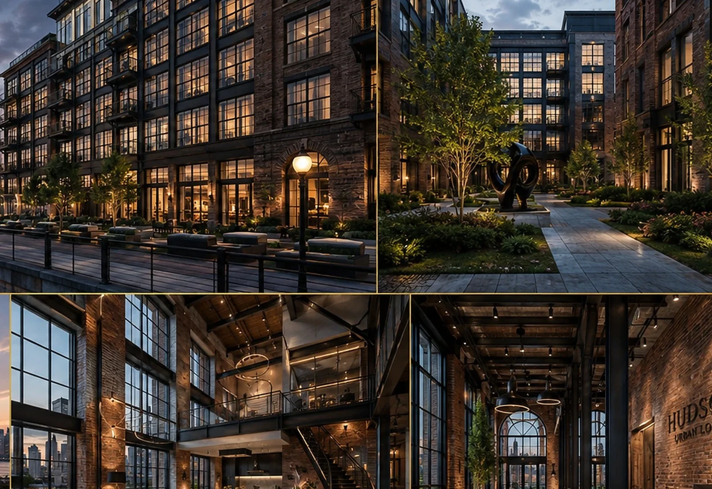

Expanded project visibility pulled together on one page.
Projects + Development Vision
A richer BADR portfolio: development intelligence, architecture and digital delivery in one place.
This updated page gathers more of the portfolio and links every service family to built evidence.
Countries across the Middle East and North America.
Development, architecture, engineering, 4D and 5D.
Each flagship case now carries a value-reading signal.
Development-Led Flagships
Projects that speak directly to land value, marketability and positioning.
These cases explain how BADR structures the opportunity before heavy commitment is made.

MAKKAH • DEVELOPMENT VISION
ATHAR Makkah
A development study that translates movement, product logic and architectural identity into a stronger value proposition.
Marketable StockVision UpliftIdentityDecision ClarityMixed-use LogicLand Efficiency
Open case study →

JEDDAH • LAND STRATEGY
Al Rehab Oasis
An option-led development story comparing site alternatives and premium zones.
Cash Flow ReadinessPortfolio FitProduct MixSales StoryPhaseabilityInvestor Readability
Open case study →

NEW CAIRO • 4D + 5D
Aman Towers
A digital-control case linking BIM, sequencing and cost intelligence to developer certainty.
Schedule VisibilityExecution ReadinessCost IntelligenceCoordination DepthIssue ControlDecision Timing
Open case study →
Full Portfolio Library
Filter by service, then jump into the matching case studies.
Every capability can now point to related proof.
MAKKAH • DEVELOPMENT
ATHAR Makkah
Site intelligence • movement • development options • architecture + value creation
Marketability
VIEW CASE →JEDDAH • DEVELOPMENT
Al Rehab Oasis
Masterplan alternatives • product strategy • premium identity • development value
Investor Readiness
VIEW CASE →NEW CAIRO • BIM / 4D / 5D
Aman Towers
Project control through digital intelligence • scheduling • cost visibility
Control Depth
VIEW CASE →
RESIDENTIAL • BIM
Andalus Courtyard Residences
LOD 300 • Architecture • Structure • MEP • Coordination • Quantity Extraction
Coordination
VIEW CASE →
EGYPT • VILLAS
Badr Heights Villas
Residential neighborhood identity • unit logic • architecture + image
Residential Appeal
VIEW CASE →
DOHA • RETAIL
Souq Galleria Mall
Architecture LOD 300/400 • Structure LOD 300 • MEP LOD 400 • Clash Detection
Retail Potential
VIEW CASE →
DUBAI • BIM VALUE
Desert Pearl Residences
Façade rationalization • MEP coordination • BOQ extraction • cost visibility
Cost Insight
VIEW CASE →
RIYADH • 4D
Falcon Arena Concept
Sequencing • logistics • construction planning • coordinated delivery
Sequence Logic
VIEW CASE →
RIYADH • CIVIC
Al Noor Grand Mosque
Signature civic form • geometry • BIM development • MEP integration
Iconic Identity
VIEW CASE →
JEDDAH • COMPOUND
Palm Horizon Compound
Residential compound concept captured from the supplied BADR portfolio index.
Community Value
VIEW CASE →
KUWAIT • MIXED-USE
Wadi Court Mixed-Use
Mixed-use identity + technical coordination + active public edges
Mixed-use Clarity
VIEW CASE →
MUSCAT • LIFESTYLE
Waterfront Lifestyle Center
Hospitality-led public realm • terraces • promenade • destination value
Destination Power
VIEW CASE →
TORONTO • RESIDENTIAL
Maple Courtyard Homes
Residential family living shaped around shared courts and calm materiality
Neighborhood Fit
VIEW CASE →
TORONTO • CREATIVE WORKPLACE
Crescent Design Hub
Adaptive workspace atmosphere • brandable environments • collaborative planning
Brand Utility
VIEW CASE →
NEW JERSEY • URBAN LIVING
Hudson Urban Lofts
Compact urban living with clear massing, efficient plans and contemporary character
Urban Market Fit
VIEW CASE →
PRIVATE RESIDENTIAL • DETAIL
Private Villa & House
Design intent carried through to detail, coordination and buildable execution logic
Private Luxury
VIEW CASE →Reach + Linked Countries
Saudi Arabia, UAE, Qatar, Oman, Kuwait, Bahrain, USA and Canada are now explicitly connected to the portfolio.
Click the map to zoom, then open city-linked projects.
Saudi ArabiaUAEQatarOmanKuwaitBahrainUSACanada

Portfolio countries + cities
Country clicks zoom. City clicks reveal linked projects.
Country clicks zoom. City clicks reveal linked projects.
BADR / NEXT STEP
NEED A DEVELOPMENT STORY,
AN ARCHITECTURAL DIRECTION
OR A DIGITAL DELIVERY CASE?
Use the updated website as a richer project reference.